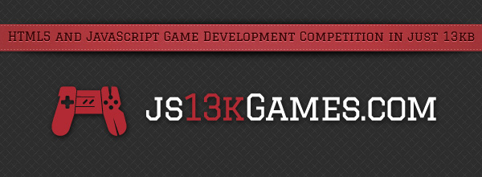

「13 kB」是多大的概念？依照目前的資訊工程水準，數個千位元組的資料不過就是「滴進海裡的一滴水」而已。如果回顧電玩興起初期的開發史，你會發現早期開發者必須克服種種不可思議的資源限制進行開發。
以曾經蔚為風潮的「亞達利 2600 (Atari 2600)」遊戲機為例，其中僅搭載了128 bytes 的 RAM，另有卡匣可額外提供 4 kilobytes 的容量。俗語說「諸多限制將誘發更多創造力」。年度舉辦的 Js13kGames 競賽，就是要挑戰遊戲開發者的創意，僅用 13,312 bytes 打造出趣味遊戲！
專為 HTML5 遊戲開發者舉辦的 Code Golf 競賽
從 2012 年開始的「Js13kGames」，是專為 HTML5 遊戲開發者所舉辦的年度 JavaScript 線上競賽。最有趣的地方即在於其檔案限制為 13 kilobytes 大小。參賽者必須在 1 個月 (8 月 13 日至次月 13 日) 的時間內，根據規定主題寫出遊戲。2015 年的遊戲開發主題為「反轉 (Reversed)」。
「Code Golf」競賽則必須以最簡短的程式碼實作特定演算法。參賽者要絞盡腦汁與演算法、資料結構、程式語言本身奮鬥，斤斤計較所使用的每一個字元。

幸好有許多熱情的好友與贊助商，此一競賽得以提供多樣的獎項，包含專業的評審、免費的紀念衣服，以及其他免運費送到家的酷炫小玩意。只要加入成為 js13kGames 社群的一份子，還有許多空間等著大家成長茁壯。即便有人碰到瓶頸，大家都會主動相互協助，樂於分享自己的工具、訣竅、開發流程。此外，有限的時間也有助於你完成遊戲，並在過程中磨練技術。
上屆贏家
現在隨便一張低解析度圖片都很容易超過 13 kb 的容量，甚至對遊戲頁面所擷取的小圖就超出遊戲本身的容量了！但你會訝異於如此小容量所能達成的遊戲效果。你可看看上屆贏家的作品，激發出自己的創意：
- 〈Behind Asteroids – The Dark Side 〉- by Gaëtan Renaudeau
- 〈Road Blocks〉- by Ash Kyd
- 〈RoboFlip〉- by Eoin McGrath
想知道這 3 個遊戲到底實作了多少功能嗎？你可參閱原文，了解這些贏家的訪談內容與他們所分享的秘訣。這幾位作者分享了嚴苛限制下所用的遊戲開發工具與技術。如果你想更進一步，亦可到 GitHub 找到所有遊戲並取得原始碼。
有太多方法可供精簡你遊戲程式碼的容量，從眾所週知的方式到較不常見的「偏方」都有。「Tuts+」遊戲開發網站另有一篇文章說明該如何將 HTML5 遊戲縮至最小容量，你也可到 js13kGames 資源頁面找到詳細的工具列表與其他素材。
歡迎加入 HTML5 遊戲開發的行列，讓 Web 擁有更豐富、更多樣的內容！